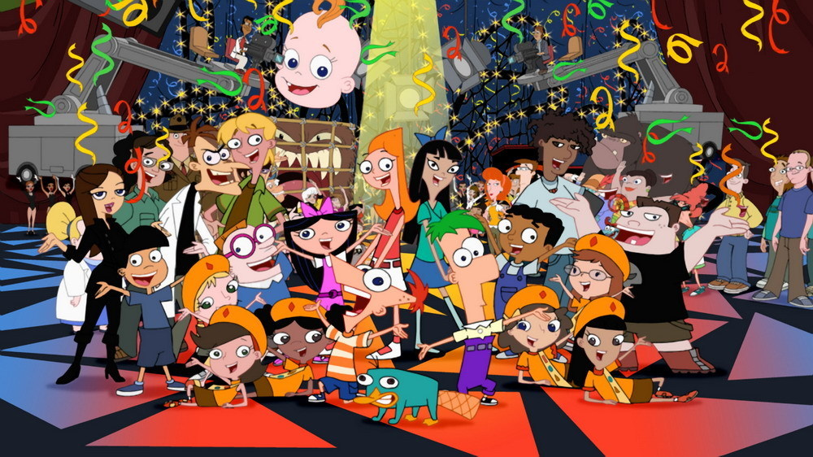

About Phineas
Phineas Flynn is a young boy in the Flynn-Fletcher family. He is the son of Linda Flynn-Fletcher and step-son of Lawrence Fletcher.
Characteristics of Phineas
- Young boy with a boundless imagination and energy
- Always looking for new things to do, build, invent and discover.
- He is a natural leader and is always eager to include his friends and family in his adventures.

Friends